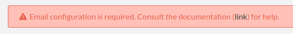
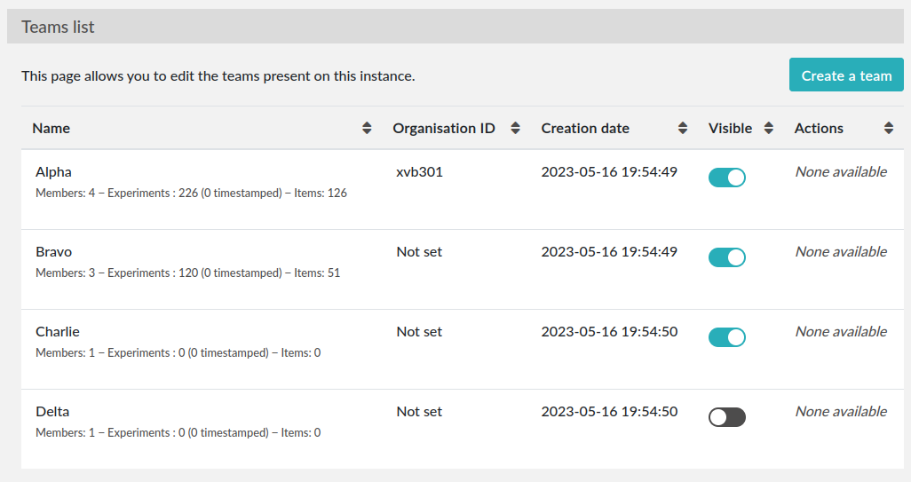
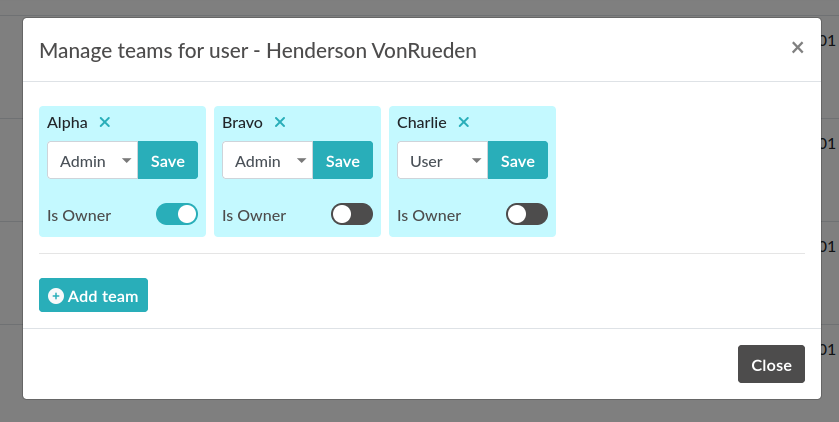

Sysadmin guide
General overview
The Sysadmin
Is the first registered user
Has access to the Sysconfig Panel with general settings impacting every team hosted on the server
Can create/edit/delete teams
Can send a mass email to all users
Can set the default language
Can configure timestamping (if another TSA is wanted)
Can change security settings (number of login attempts, manual validation of new users)
It is possible to have multiple ‘Sysadmin’ accounts
Account creation
New users need to register an account on the register page, accessible from the login page. They need to choose a team from the list.
By default, newly created accounts are disabled. The admin of the team needs to validate them by going into the admin panel and activate new users. This guide assumes you already have a working installation of eLabFTW on a server. The Sysadmin has access to core settings of the eLabFTW instance like email configuration or security preferences.
Setting up email (required)
If there is only one thing to do after an install, it’s setting up email. Otherwise users will not be able to reset their password nor receive notifications!
In order to configure eLabFTW to send emails, you will need credentials to a SMTP service. If you are using a SMTP service without authentication, it works, too.
Go to the Sysadmin panel. You will see this warning:
Click the tab “Email” and add the requested information to connect to your SMTP server.
If you don’t know what to do, I highly recommend using SMTP2GO (use this referral link), they provide a free plan that will probably be enough for your use case.
Register an account using this link: SMTP2GO. Once logged in, add an SMTP User: it will provide you with a login and password to connect to the SMTP server “mail.smtp2go.com”. Input these credentials on the Sysadmin panel and test sending an email.
Set up backup
See the dedicated backup page.
Configure teams (optional)
If your instance hosts different research groups/teams, you can create them from the Sysadmin panel (sysconfig.php).
You might also want to edit the Default team name. In the screenshot below, there are four teams. The “Organization ID” is an attribute that you can set in case you wish to use the information sent by an external authentication service (such as SAML or LDAP) to assign a team to a new user. It basically allows you to match a team on eLabFTW with a team in your directory.
The “Visible” attribute allows you to hide a team from the “Register” page. Use it for the administrative team for instance. Only a completely empty team can be deleted.
Configure authentication (optional)
eLabFTW currently supports four authentication mechanisms:
Local authentication: email + password stored locally, this is the default
SAML authentication: use one or several Identity Provider (IDP) to authenticate users. See dedicated SAML documentation page.
LDAP authentication: verify the login with an LDAP service. See dedicated LDAP documentation page.
External authentication: use request headers added by your own middleware to authenticate the user (e.g. Apache’s auth_mellon)
It is possible to have several mechanisms at the same time but recommended to only leave one visible to users. So if you configure LDAP or SAML, disable the Local login so Users are not confused.
If you disabled Local authentication and cannot login back because your other method fails, you’ll want to run this SQL query (elabctl mysql will give you a MySQL prompt if you’re using Dockerized MySQL service):
update config set conf_value = '1' where conf_name = 'local_auth_enabled';
Set up timestamping (optional)
eLabFTW provides an easy way to do Trusted Timestamping for your experiments, so you can have strong legal value for your lab notebook.
By default, it is setup to use pki.dfn.de as TSA. It is free for researchers. The only problem, is that they don’t have ETSI certification for this service (although their PKI infrastructure is certified ETSI TS 102 042).
So if you need a stronger certification, you should go with a commercial solution providing an RFC 3161 way of timestamping documents. We recommend Universign.com, as they are one of the most serious and recognized TSA out there, but feel free to use the one you prefer.
You can select from the list of pre-configured TSA or use a custom one by providing the URL and login/password.
Remember: no data is sent to the TSA (TimeStampingAuthority), only the hash of the data is sent, so no information can leak!
Configure automatic timestamping
You might want to automate the timestamping of experiments, and not rely on users triggering the action manually. For that, you need to setup a recurrent task (cronjob or systemd timer) that will call a console command.
The command is: bin/console experiments:timestamp –help. It requires an argument which is the id of the user doing the timestamp. In most cases, using 1 will work fine. Alternatively you can create a specific user for this purpose.
By default, all experiments modified in the past week will be timestamped. So you’ll want to adjust your recurrent task periodicity to align with the –modified-since / -m setting. Use english terms like “1 month” or “2 weeks” for this option.
Example:
# timestamp all the modified experiments from past week
# run on every Saturday at 3AM
0 3 * * 6 docker exec elabftw bin/console experiments:timestamp 1
# timestamp all the modified experiments of past month
# run the first day of the month at 3AM, in verbose mode
0 3 1 * * docker exec elabftw bin/console experiments:timestamp 1 -m "1 month" -v
Configure Keeex
eLabFTW provides a way to use a Keeex service during the timestamp action. It is a technology that allows to guarantee integrity and authenticity of files, autonomously and without third party.
When enabled, the generated pdf for timestamping will be sent over to a Keeex Fusion service running on your network in http mode for keeex/timestamping of the pdf, before being timestamped via your RFC3161 provider.
If you would like to use this service, please contact us.
Configure storage (optional)
By default, uploaded files are stored in the uploads/ folder that is mounted outside the container for persistence. You can choose instead to use an S3 compatible service (buckets) to store these files. The “Uploads” tab allows you to configure this storage.
To use S3 storage, set ELAB_AWS_ACCESS_KEY and ELAB_AWS_SECRET_KEY in your config file. You can use bin/console uploads:migrate to migrate existing locally uploaded files to S3 storage.
Set up a cronjob to renew TLS certificates (optional)
It is important to consider already how the TLS certificates will be renewed. Let’s Encrypt certificates are valid only 3 months, which is a good thing, because it will allow you to find out much quicker if your setup works.
You will find the documentation for renewal with certbot here: certbot renew certificates.
If you’re encountering issues, do not hesitate to join the eLabFTW chat room to find help: gitter chat (matrix room).
Update often
It is important to keep your install up to date with the latest bug fixes and new features.
Subscribe to the newsletter to be warned when a new release is out or select “Releases only” from GitHub’s Watch button on the repo page.
See instructions on updating eLabFTW on How to update.
Sysadmin Panel
Server tab
Settings
Note about “Allow the base permission setting «Only me»”: if you wish to prevent users from using this Base Permission, select No here.
In order to go over existing entries and change all entries with the Base Permission “Only me” and set it to “Only me + Admins”, you can execute these SQL requests:
-- experiments read permissions
update experiments set canread = json_set(canread, '$.base', 20) where
json_extract(canread, '$.base') = 10;
-- experiments write permissions
update experiments set canwrite = json_set(canwrite, '$.base', 20) where
json_extract(canwrite, '$.base') = 10;
Remote directory configuration
Ignore this if you are not a CNRS lab.
This allows to query an external endpoint to get a list of users that can be added to the eLabFTW local users database.
Users tab
The Sysadmin can manage Users the same way Admins can manage Users from their Team, but with more options, such as changing the password or attributes, and manage the teams for users.
To make a user part of multiple teams, search for a user, and click the three vertical dot button on the right to open a menu, and select “Manage teams for user”. A modal window will allow you to add teams to this user. A user can be admin in a team and not admin in another.
The attribute “is owner” allows you to determine which of the Admins in a Team are the “owner” of the team. It has no impact anywhere and is purely an informational attribute.
Monitoring
Healthchecks
To monitor the nginx service, use /healthcheck endpoint, which replies with status code 204 if nginx is working.
To monitor the php-fpm service, use /php-ping, which replies with status code 200 if php-fpm is working.
To monitor the nginx, the php-fpm and the MySQL connection, use /healthcheck.php, which replies with status code 200 and ok in the body of the response if everything is working.
Metrics
To gather metrics from the php-fpm service, use /php-status, which replies with information about php-fpm processes. See the PHP FPM Status page documentation for more details.
To gather metrics from the nginx service, use /nginx-status, which replies with information about nginx processes. See the Nginx status module documentation for more details.
The /php-status and /nginx-status pages are protected with Basic authentication:
user:
elabftwpassword: the value of
STATUS_PASSWORDenvironment variable
If this variable is not set (default), then a random unknown password will be generated but never displayed, effectively disabling access to these pages.
All of the above endpoints will not produce an access log entry.
Logging
Access and error logs
Logs produced by eLabFTW, nginx or PHP-FPM are redirected to /dev/stdout and /dev/stderr of the container. They appear with the command docker logs elabftw. By default, the logging driver is local, which means it will create files on the host.
It is recommended to emit logs to a centralized service, by using a different logging driver, such as syslog or graylog or loki (by grafana). For this, change the compose file configuration to include the correct settings for your infrastructure.
Audit logs
It is possible to configure Audit Logs to be emitted in the general logs, in addition to being stored in the database. It might be important to you to keep a trace of these actions in a centralized, deported service. To enable this behavior, go to the Audit Logs tab of the Sysconfig Panel and enable “Emit audit logs with PHP error log”. The message of the event is is JSON, and has this structure:
{
category_value: number,
category_name: string,
message: string,
requester_userid: number,
target_userid: number
}
Example:
{
"category_value": 10,
"category_name": "Login",
"message": "User logged in",
"requester_userid": 1,
"target_userid": 1
}
You can then configure your centralized login system to interpret these messages to build advanced queries.
Staging instance
A staging instance, sometimes called “pre-production”, is another eLabFTW instance running alongside the production instance, and used to test upgrades or configuration changes without impacting the production instance.
It is highly recommended to setup a staging instance.
How to create a staging instance
Copy the configuration file of the production instance (/etc/elabftw.yml) into another folder (/path/to/elabftw-staging/docker-compose.yml)
Change the SITE_URL value: for example from elab.uni.de to elab-test.uni.de
Similarly, change the SERVER_NAME value
Modify the volumes so it points to another folder than the production one, for both containers
Of course, adjust these instructions relative to your setup. Try and have the most similar setup between both. If one is using NFS storage with external MySQL server, do the same for staging instance.
Start your staging instance with: docker compose up -d. Make sure to adjust DNS, certificates, load balancers, reverse proxies accordingly.
Use the Restore backup instructions to copy your production data into the staging instance. It is recommended to do that regularly, especially before updates, so the staging data is the same as production data and you will not have surprises. It’s also a good opportunity to test your backups, if this has not been automated.
Before a major release, update the staging instance, optionally asking users if everything looks good on this instance, and once everything is validated, you can upgrade the production instance.
Note
It is recommended to post a general announcement from the Communications tab in the Sysconfig Panel to inform users that this is a test instance, preventing them from mistakenly entering data.